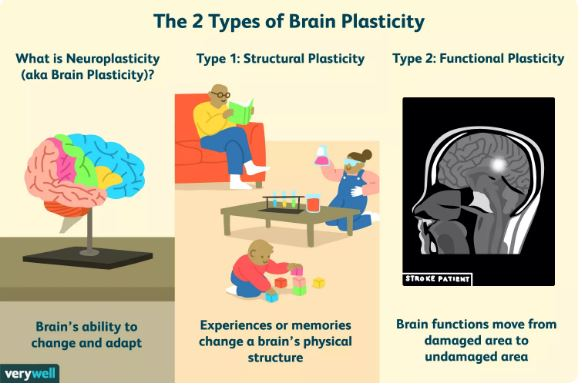

Neuroplasticity refers to the brain’s ability to adapt. Or, as Dr. Campbell puts it: “It refers to the physiological changes in the brain that happen as the result of our interactions with our environment. From the time the brain begins to develop in utero until the day we die, the connections among the cells in our brains reorganize in response to our changing needs. This dynamic process allows us to learn from and adapt to different experiences”

First, let’s get an idea of some of the ways that neuroplasticity can be applied.
A few of the methods that have been shown to enhance or boost neuroplasticity include:
• Intermittent fasting (as noted earlier): increases synaptic adaptation, promotes neuron growth, improve overall cognitive function, and decreases the risk of neurodegenerative disease.
• Traveling: exposes your brain to novel stimuli and new environments, opening up new pathways and activity in the brain.
• Using mnemonic devices: memory training can enhance connectivity in the prefrontal parietal network and prevent some age-related memory loss
• Learning a musical instrument: may increase connectivity between brain regions and help form new neural networks.
• Non-dominant hand exercises: can form new neural pathways and strengthen the connectivity between neurons.
• Reading fiction: increases and enhances connectivity in the brain.
• Expanding your vocabulary: activates the visual and auditory processes as well as memory processing.
• Creating artwork: enhances connectivity of the brain at rest (the “default mode network” or DMN), which can boost introspection, memory, empathy, attention, and focus.
• Dancing: reduces the risk of Alzheimer’s and increases neural connectivity.
• Sleeping: encourages learning retention through the growth of the dendritic spines that act as connections between neurons and help transfer information across cells
The more mindful we become and the more we meditate, the more our brain adapts to this state as our default state. This is why mindfulness meditation has such a big impact on regular practitioners even outside of their dedicated practice time; they have taught their brain to be mindful, calm, at peace, and centered all throughout the day, not just when they are actively meditating.
Sychotherapists have turned to mindfulness meditation as an important element in the treatment of a number of problems, including: depression, substance abuse, eating disorders, couples’ conflicts, anxiety disorders, and obsessive-compulsive disorder.
Sit on a straight-backed chair or cross-legged on the floor. Focus on an aspect of your breathing, such as the sensations of air flowing into your nostrils and out of your mouth, or your belly rising and falling as you inhale and exhale. Once you’ve narrowed your concentration in this way, begin to widen your focus. Become aware of sounds, sensations, and your ideas. Embrace and consider each thought or sensation without judging it good or bad. If your mind starts to race, return your focus to your breathing. Then expand your awareness again.